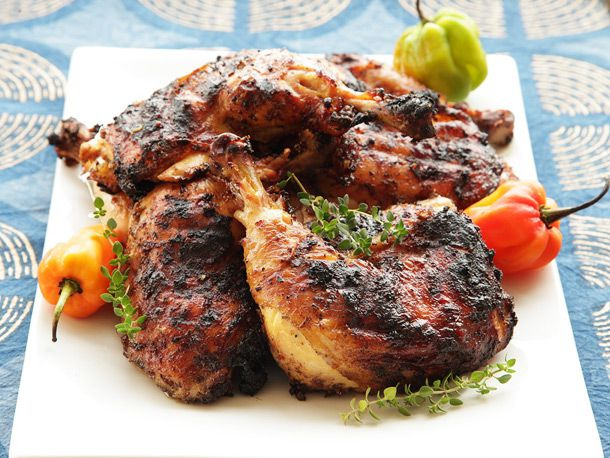

Jerk Chicken

Description
A Jamaican classic, jerk chicken is always a great choice if you want to show off Jamaican cuisine.
Trust me, marinaded chicken seasoned with Jerk cooked over the grill is going to win any social gathering.
Ingredients
- 6 whole Scotch bonnet peppers
- 6 scallions, roughly chopped
- 1 (2-inch) knob fresh ginger, roughly chopped
- 6 garlic cloves
- 2 tablespoons fresh thyme leaves
- 1 tablespoon ground allspice
- 1 teaspoon freshly grated nutmeg
- 2 tablespoons dark brown sugar
- 1/2 cup soy sauce
- 2 tablespoons zest and 1/4 cup juice from about 4 limes
- 1/4 cup olive oil
- Kosher salt and freshly ground black pepper
- 1 large whole chicken, back removed, split in half along breastbone
- 1/4 cup whole allspice berries
- 3 dozen dried bay leaves (about 2 loosely packed cups)
Steps
- Combine peppers, scallions, ginger, garlic, thyme, allspice, nutmeg, brown sugar, soy sauce, lime zest
and juice, olive oil, 2 teaspoons black pepper, and 1 tablespoon kosher salt in the work bowl of a food
processor or the jar of a blender. Blend until a rough purée is formed, about 1 minute.
- Divide chicken and marinade between two gallon-sized zipper-lock bags, or place in a large baking dish
and cover tightly with plastic wrap. Place whole allspice berries and bay leaves in a gallon-sized
zipper-lock bag and fill with water. Refrigerate chicken and bay leaves at least 10 hours and up to 1 day.
- When ready to cook, remove chicken from bags, allow excess marinade to drip off, and transfer to a
large plate. Light one half chimney full of charcoal. When all the charcoal is lit and covered with gray ash,
pour out and pile the coals against one wall of a kettle grill. Alternatively, set the leftmost burners of a
gas grill to medium-high heat. Set cooking grate in place, cover grill and allow to preheat for 5 minutes.
Clean and oil the grilling grate. Set bottom and lid vents to half-open.
- Drain bay leaves and allspice berries in a fine-mesh strainer. Spread 2/3 of bay leaves evenly over the cooler
side of the grill (it's ok if some allspice berries fall through) in a pattern just large enough to fit the
chickens. Lay the chickens over the bay leaves skin side up with the legs pointed towards the hotter side of
the grill. Place 1/3 of remaining bay leaves over hot side of grill and immediately cover, with the vent above
the chicken. Cook for 15 minutes.
- Open lid and place half of remaining bay leaves and allspice berries on hot side of grill directly above the coals.
Immediately cover and cook for another 15 minutes. Open lid, add 15 new coals to the pile of hot coals, then place
remaining bay leaves and allspice berries on hot side of grill directly above the coals. Cover and continue to cook
until the coolest part of the chicken breast registers 145°F (63°C) on an instant-read thermometer, about 20 minutes longer.
- Uncover grill and wait 5 minutes until coals are hot again (if using gas grill, increase heat to high). Carefully lift
the chicken off the bay leaves and transfer it to the hot side of the grill skin side up. Using tongs, drop the bay leaves
into the grill directly onto the coals or burners so that they smoke. Cook the chicken until lightly charred, about 3 minutes.
Flip chicken and continue to cook until skin is crisp and charred and coolest part of breast registers 150°F to 155°F (66°C to 68°C)
on an instant-read thermometer, 4 to 6 minutes longer. Transfer to a large platter, allow to rest 5 minutes, and serve.
Go Back to Home